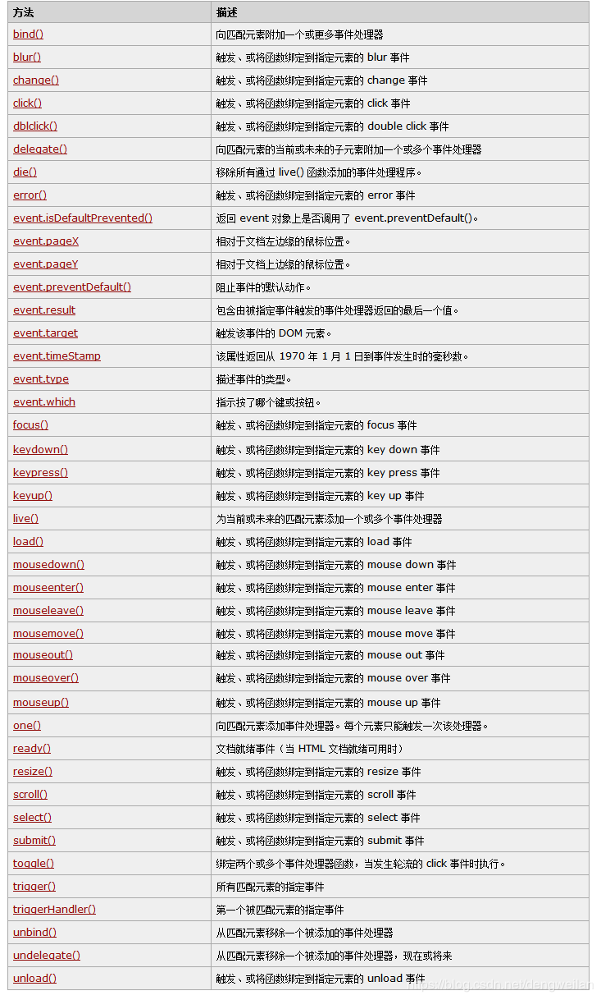

世上无难事只怕有心人，敲代码也一样只要你用心去搞懂一件事，即使一个小小的用法对你以后也会有很大的作用；
项目虽然赶得紧但是有些问题百度找完答案解决之后，也要自己梳理一遍做到心领神会！！！今天就直接来上周遇到的情况：
就是使用JS中的类似：documnet.getelementbyid('')方法与$('xxx')获得对象的区别于怎么进行两者之间的转换；
现在开始直奔今天主题：两者对象的区别（以下数据通过打日志的方法就可以获得 typeof() 即可）
Jquery得到的对象类型：$('xxx')===================得到的类型是：[object Object]
Js得到的对象的类型：docunment.getelementbyid('')==得到的类型是：[object HTMLDivElement]
KeyNote:
a: 什么是Jquery对象？
答：通过jQuery包装DOM对象后产生的对象。jQuery对象是jQuery独有的 != Js中的对象，只能可以使用jQuery里的方法。
Jquery中的对象既然是对JS中对象的包装，那么一定会有转换的方法；看了网上很多例子基本上是千篇一律，不过有一点还是很庆幸的，
那就是例子通俗易懂，那么下面就直接开始上菜了o(∩_∩)o
前提：如果一个获取的是jQuery对 象，那么我们在变量前面加上$，如：var $variab = jQuery对象；
如果获取的是DOM对象，则与习惯普通一样：var variab = DOM对象；这么约定只是便于讲解与区别，实际使用中并不规定。
转换方法：
a : jQuery对象转成DOM对象;
两种转换方式将一个jQuery对象转换成DOM对象：[index]和.get(index);
(1)jQuery对象是一个数据对象，可以通过[index]的方法，来得到相应的DOM对象。
如：var $v =$("#v") ; //jQuery对象
var v=$v[0]; //DOM对象
alert(v.checked) //检测这个checkbox是否被选中
(2)jQuery本身提供，通过.get(index)方法，得到相应的DOM对象
如：var $v=$("#v"); //jQuery对象
var v=$v.get(0); //DOM对象
alert(v.checked) //检测这个checkbox是否被选中
b : DOM对象转成jQuery对象:
对于已经是一个DOM对象，只需要用$()把DOM对象包装起来，就可以获得一个jQuery对象了。$(DOM对象)
如：var v=document.getElementById("v"); //DOM对象
var $v=$(v); //jQuery对象
转换后，就可以任意使用jQuery的方法了。
通过以上方法，可以任意的相互转换jQuery对象和DOM对象。需要再强调注意的是：DOM对象才能使用DOM中的方法，jQuery对象是不可以用DOM中的方法。
Eg :
下面是其它的相关使用方法：
1、DOM对象转jQuery对象
普通的Dom对象一般可以通过$()转换成jQuery对象。
如：$(document.getElementById("msg"))
返回的就是jQuery对象，可以使用jQuery的方法。
2、jQuery对象转DOM对象
由于jQuery对象本身是一个集合。所以如果jQuery对象要转换为Dom对象则必须取出其中的某一项，一般可通过索引取出。
如： $("#msg")[0]，$("div").eq(1)[0]，$("div").get()[1]，$("td")[5]
这些都是Dom对象，可以使用Dom中的方法，但不能再使用jQuery的方法。
以下几种写法都是正确的：
$("#msg").html();
$("#msg")[0].innerHTML;
$("#msg").eq(0)[0].innerHTML;
$("#msg").get(0).innerHTML;
3、两种方法获取对象方式： 如有 <form name="formName" id="formid"></form>
通过id:
document.getElementById('formid');
$('#formid')
通过name
document.getElementsByName('formName')[0]
$("form[name='formName']")
Jquery自带的方法列表如下：

版权声明：本文为博主原创文章，如需转载，请标明出处。